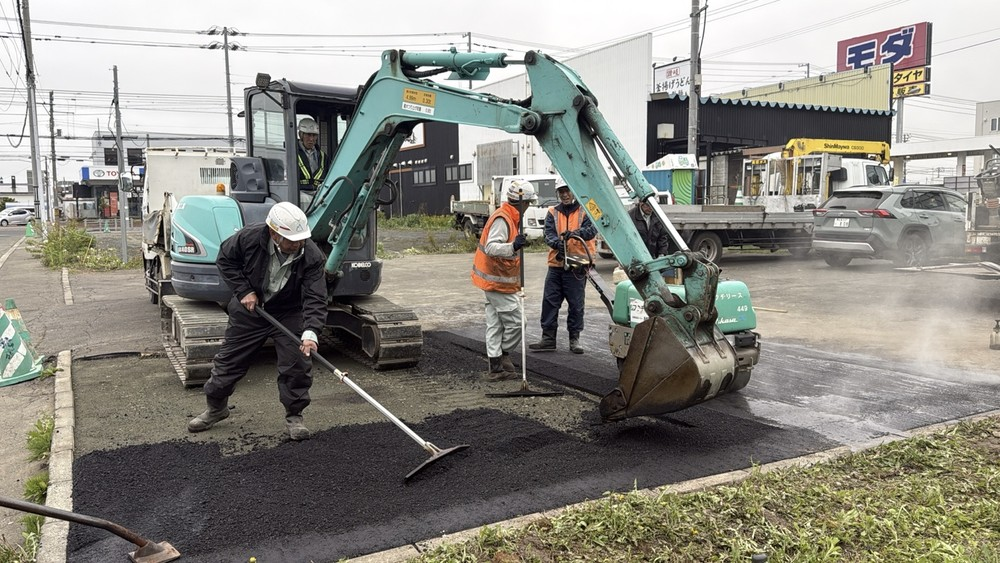
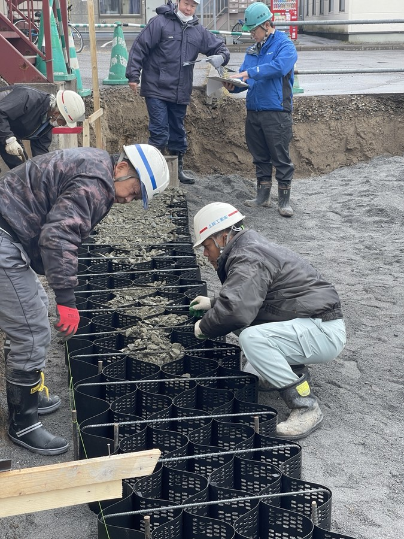

💰
月給制で収入が安定
天候に左右される日でも、日給制より収入が安定しやすい。
上総工業有限会社は、北海道北見市を中心に、道路補修や個人宅のアスファルト舗装などを行う土木・舗装工事会社です。未経験でも、先輩が一つずつ教えます。



天候に左右される日でも、日給制より収入が安定しやすい。
見て盗めではなく、先輩が作業の流れから教えます。
地元で腰を据えて働きたい方に向いています。
1〜3月はさいたま市方面の出張あり。しっかり稼ぎたい人に向いています。
集合・朝礼を行い、当日の作業内容と安全確認をします。
チームで協力して、掘削・整地・補修などの作業を行います。
アスファルトを敷き、転圧してきれいに仕上げます。
現場の片付けと清掃、機材の点検を行い翌日に備えます。

Aはい。補助作業から始め、少しずつ覚えられます。
A体を動かす仕事ですが、最初からすべてを任せるわけではありません。
A可能です。仕事内容や働き方の相談だけでも歓迎です。
応募前の相談、仕事内容の質問、見学希望も歓迎しています。
上総工業有限会社